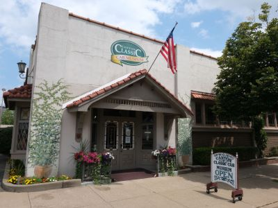
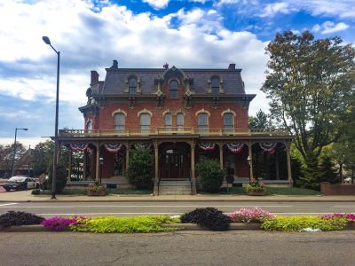
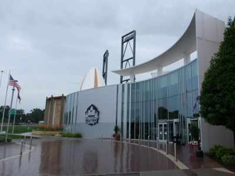

Canton Travel Guide
Mid-sized industrial city known for its manufacturing legacy, presidential history, and evolving cultural identity rooted in resilience and community pride.
Places to See in Canton

Des Moines Guy, CC BY-SA 3.0, via Wikimedia Commons; Image Size Adjusted

Canton Classic Car Museum
Exhibits a diverse array of vintage automobiles, memorabilia, and historical artifacts in a nostalgic early 20th-century setting.

Jonathunder, CC BY-SA 3.0, via Wikimedia Commons; Image Size Adjusted

Canton Museum of Art
Features rotating exhibitions of American works on paper and contemporary ceramics, along with educational programs and community events.

Danksergeant15, CC BY-SA 4.0, via Wikimedia Commons; Image Size Adjusted

First Ladies National Historic Site
Historic museum and preserved residence interpreting the lives, influence, and evolving public roles of the women who served as presidential spouses.
Danksergeant15, CC BY-SA 4.0, via Wikimedia Commons; Image Size Adjusted
McKinley Presidential Library and Museum
Combines presidential history, regional heritage, and interactive science exhibits including a planetarium and life-size historic streetscape.

Dsmspence, CC BY-SA 3.0, via Wikimedia Commons; Image Size Adjusted

Pro Football Hall of Fame
Immersive sports museum preserving the history, legends, and cultural impact of professional football through interactive exhibits and iconic memorabilia.
Jonathunder, CC BY-SA 3.0, via Wikimedia Commons; Image Size Adjusted
William McKinley Memorial
Serves as the final resting place of the 25th U.S. President and his wife, featuring a grand neoclassical monument atop 108 steps overlooking the city.
Overview
Canton, Ohio, is best known as the home of the Pro Football Hall of Fame and as the "Cradle of Professional Football," since the National Football League was organized here in 1920. It is also the hometown of President William McKinley, and the city has a collection of presidential and historic sites that is unusual for a city of its size. Located in northeast Ohio about an hour south of Cleveland, Canton has a long industrial heritage in steel, roller bearings, and other manufacturing.
Most visitors come to Canton for football, and the Hall of Fame, its annual Enshrinement Festival in August, and the Hall of Fame Game draw fans from across the country. Others come for American history, with the McKinley museum and memorial and the First Ladies National Historic Site, or for art and automobiles in the city's smaller museums. Canton is a relaxed and affordable destination that is easy to see in a day or a weekend, and it makes a convenient stop between Cleveland, Akron, and the Amish country of Holmes County.
History
Canton was laid out in 1805 by Bezaleel Wells and is said to have been named after the Chinese city of Canton (Guangzhou), from which a ship's captain had brought goods to Baltimore. The Ohio and Erie Canal and later the railroads made it a regional center, and in the late nineteenth century industrialists and inventors such as the Timken family, the Hoover company in neighboring North Canton, and Diebold made the area a manufacturing powerhouse. William McKinley practiced law here, was elected to Congress and as governor of Ohio, and conducted his 1896 "front porch" presidential campaign from his Canton home; he was assassinated in 1901 and is buried in the city. In 1920 the American Professional Football Association, renamed the NFL two years later, was founded in a Canton auto showroom, and the Pro Football Hall of Fame opened in 1963.
Sightseeing and Popular Landmarks
The Pro Football Hall of Fame is Canton's major landmark, with its football-shaped dome and the bronze busts of the game's greatest players, and the adjacent complex hosts the Hall of Fame Game each year. The William McKinley Memorial is a large neoclassical mausoleum with a long flight of steps and a reflecting pool, and it can be seen together with the McKinley Presidential Library and Museum. The First Ladies National Historic Site includes the former home of Ida Saxton McKinley and an education center, and the Canton Classic Car Museum displays vintage and classic automobiles. Downtown also has the Palace Theatre and the Cultural Center for the Arts.
Culture and Museums
The Canton Museum of Art has a collection of American watercolors and ceramics, the McKinley Presidential Library and Museum covers the life of the 25th president and includes a science center and planetarium, and the Pro Football Hall of Fame has extensive exhibits on the history of the game. The Players Guild Theatre, the Canton Symphony Orchestra, and the Canton Ballet are all part of the city's performing arts scene, and the First Ladies National Historic Site tells the stories of the women who served as first ladies, from Martha Washington to the present. Nearby Zoar Village, a former communal settlement, and the Ohio and Erie Canalway are good side trips for history lovers.
Parks
Canton has a large park system for its size, run mostly by Stark Parks, including Sippo Lake Park with its trails and Meyers Lake, and Centennial Plaza in the city center is a popular gathering place for events. Visitors can also try the Ohio and Erie Canal Towpath Trail, which passes through the nearby Navarre area, and the Lake Cable and Nimisila areas have hiking and boating. The city's parks are also used for annual festivals, which include a balloon festival and Fourth of July fireworks.
Seasons and Weather
Canton has a humid continental climate with four distinct seasons. Summers are warm and humid, with highs usually in the 80s°F, while winters are cold and cloudy, with highs in the 30s°F and frequent snow from lake-effect systems off Lake Erie that reach this area, averaging about 40 inches annually. Spring and fall are mild, and August is peak season because of the Hall of Fame Enshrinement Festival, so hotels fill up quickly and should be booked early.
This article uses material from Wikipedia as well as information from official tourism and institutional sources. Key references include Visit Canton, Pro Football Hall of Fame, McKinley Presidential Library & Museum, First Ladies National Historical Park, Canton Museum of Art, Stark Parks, and the National Weather Service Cleveland. Wikipedia material is from the articles "Canton, Ohio" and "Pro Football Hall of Fame", and is available under the Creative Commons Attribution-Share-Alike License 3.0.

.jpg){kind=link}